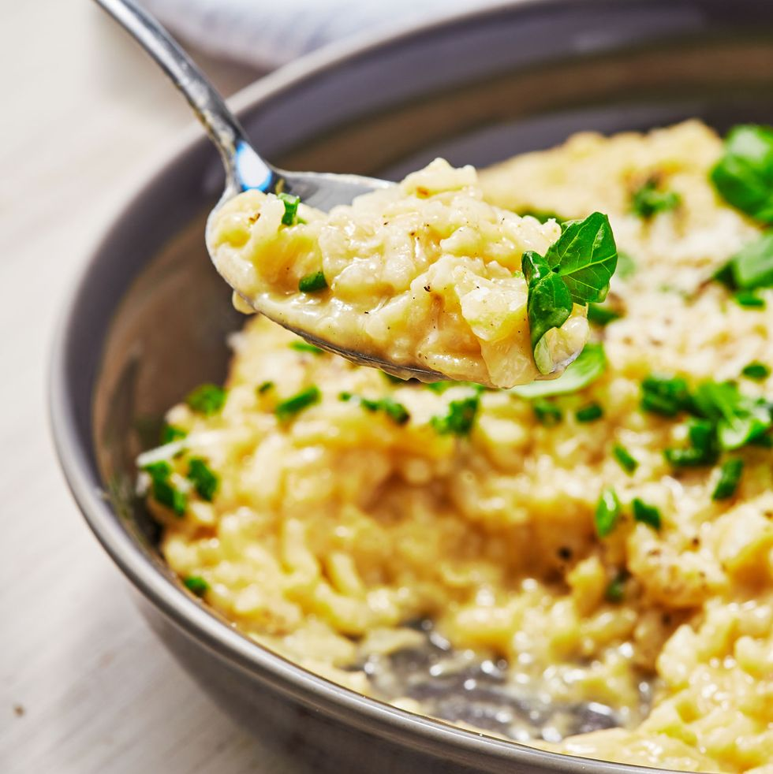

Risotto

Description:
There is nothing as creamy and decadent as risotto. This easy rice dish is as comforting as it comes and while it may seem intimidating it really is simple. All you need is an hour, some arborio rice, good quality chicken broth, a little butter and cheese and wine, along with your favorite aromatics like onion, garlic, and basil.
Ingredients:
- 4 c. low-sodium chicken broth
- 3 c. water
- 4 tbsp. butter, divided
- 1 small yellow onion, finely chopped
- 2 cloves garlic, minced
- 1 1/2 c. arborio rice
- Kosher salt
- 1/4 c. dry white wine
- 1 tbsp. fresh lemon juice
- 1 c. freshly grated Parmesan cheese, plus more for serving
- Freshly ground black pepper
- 2 tbsp. chopped chives
- 2 tbsp. finely chopped basil
Steps:
- In a medium pot, combine water and broth and bring to simmer.
- Meanwhile, in a large straight-sided skillet over medium-high heat, melt 2 tablespoons butter. Add onion and cook, stirring occasionally, until softened, about 5 minutes. Add garlic and cook, stirring, until fragrant, about 1 minute.
- Stir rice into onion mixture and season with 1 1/2 teaspoons salt. Cook, stirring constantly, until rice is lightly toasted, about 4 minutes.
- Pour wine into rice mixture and bring to a boil. Cook, until almost evaporated, about 30 seconds.
- Reduce heat to medium and pour a few ladlefuls of warm broth into skillet and cook, stirring gently until broth is absorbed. Continue to cook, repeating adding a few ladlefuls of broth and stirring until broth is absorbed before adding more, until rice is al dente, about 20 minutes.
- Remove skillet from heat and stir in remaining 2 tablespoons butter, lemon juice, and Parmesan. Season with salt and pepper.
- Top with chives and basil and more Parmesan before serving.